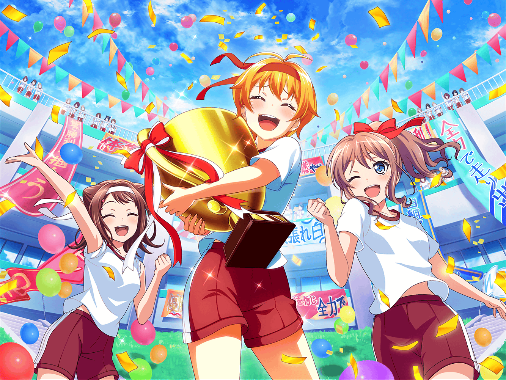
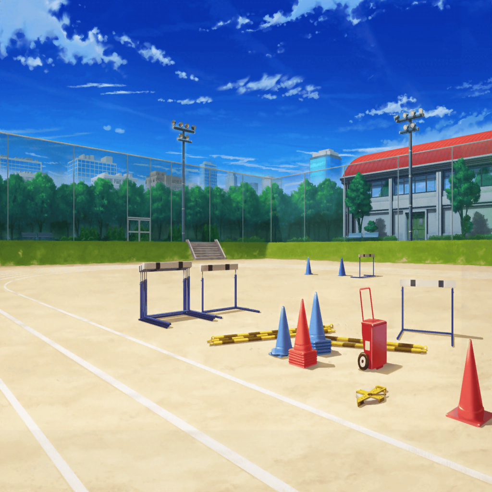

花咲川女子学園 グラウンド
はぐみ
う～。
次得点入れなきゃ、はぐみ達負けちゃうよ～
はぐみ
でもでも！
諦めちゃダメだよね！
はぐみ
最後の最後まで全力で戦わなきゃ！
香澄
そーだよー！
大丈夫、大丈夫！
試合はまだまだこれからだよ！
美咲
これからって言っても、
もう７回裏だけどね
はぐみ
かーくん、みーくん！
今日は応援に来てくれてありがとう！
おたえも！
たえ
１度、観に来てみたかったんだよね。
ソフトボールの試合
たえ
来てよかったよ。
バットのカキーンって音、聴いてて楽しい
美咲
まあ、思ったより面白いかも。
はぐみも頑張ってるし
香澄
うんうん！
さっきなんてズバーンって
ボール投げててカッコよかったよ！
はぐみ
わーい、みんなにホメられちゃった！
はぐみ
あ、でも、応援席暑いよね？
日焼けしてない？
たえ
大丈夫。
ばっちり日焼け止め塗ってきたから
香澄
今日は、はぐを応援するために
準備は万全にしてきたんだよ！
はぐみ
えへへ、はぐみのためにみんなありがと！
香澄
にしても、はぐって本当に運動神経いいよね。
はぐがバッターボックスに立てば
ホームラン間違いなし！
たえ
それに、はぐみがチームにいると、
なんだか笑顔になれる気がする。
……なんでだろう？
香澄
わかるかも！
はぐって、試合のどんな時でもニコニコしてるから、
見てるこっちまで自然と笑顔になっちゃう！
香澄
ねえねえ、美咲ちゃん。
はぐってハロハピでもこんな感じなの？
美咲
うん、こんな感じ。
……っていうか、このまんまかな
たえ
じゃあ、
ハロハピはいつも明るくて楽しいね
美咲
ただ、ウチにははぐみと似てる人が
他に２人もいるからね
美咲
明るいっていうか騒がしい
たえ
明るくて騒がしい……
そんな目覚まし時計があったら最強だね
香澄
ホントだ！
私も１家に１台、はぐがほしい～！
そうしたら、もう絶対寝坊しないのに！
はぐみ
わかった！
じゃあ今度、
かーくんの家に起こしに行くね！
たえ
じゃあ、私も
はぐみ
うん、任せて！
かーくんもおたえも
はぐみがバッチリ起こしちゃうよー！
美咲
いやいや、なんでそんな話になってるのさ……
美咲
ていうか、はぐみ、こんなに話し込んでて大丈夫なの？
はぐみ
そうだった！
はぐみ、そろそろ行かないとだ！
じゃあ、みんな、また後でね！
美咲
あ、ちょっと待った、はぐみ。
その前に１つ確認したいことがあるんだけど、いい？
はぐみ
ん？ みーくん、どうしたの？
美咲
今日は、手、抜いてない？
はぐみ
みーくん……
はぐみ
まさか！ 抜いてないよ！
はぐみ
はぐみ、体育祭の時に思ったんだ。
勝負は負けても手に入るものがあるんだって
はぐみ
ううん、むしろ真剣に戦ったからこそ、
負けた時、色々なことを考えられるって
はぐみ
だから……絶対手を抜かない。
後で後悔しないように、勝っても負けても、全力を出し切るよ！
美咲
勝っても負けても？
はぐみ
ううん、絶対勝つ！
必ず逆転するから、最後まで見ててね！
美咲
わかった。
行ってらっしゃい
はぐみ
うん、行ってくる！
香澄
わわっ！ おたえ、美咲ちゃん、見て見て！
はぐのチーム、満塁だよ！ 満塁！
美咲
これでホームランを打てば、サヨナラ逆転勝ち
美咲
バッターははぐみ……
舞台はそろった……って感じだなー
香澄
うん！
はぐなら、ぜーったいに打ってくれるよ！
たえ
どんなキレイな音が鳴るんだろう……
楽しみ
美咲
あ、はぐみが出てきた
香澄
はぐー！
頑張ってー！！
ホームラン決めちゃってー！！
たえ
カッキーンかな？
それともカキーンかな？
はぐみ
（みんな……よーっし、はぐみ頑張るっ！）
はぐみ
さあ、こーい！
香澄
……あ！
はぐが打ったぁー！
美咲
しかも、これ…………ホームランだ！
香澄
すごい、すごい、すご～い！
はぐ、回れ回れ回れ～！
美咲
いやいや、ホームランなんだから、
そんなに急いで走らなくても大丈夫だから
はぐみ
えへへ！
かーくん、みーくん、おたえー！
はぐみ、やったよー！
たえ
カッキーンだったね。
……………………うん、いい音